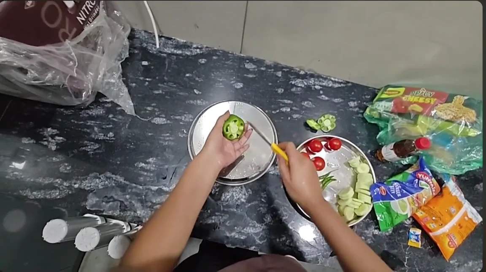

First-person footage.
Action-aware highlights.
Track hands and objects, inspect the moments that made the cut, and export a highlight reel locally.
Selected interval
- 15%
- Maximum highlight duration
- 21
- Landmarks per tracked hand
- Offline
- Local inference and export
Processing pipeline
From footage to highlights
Semantic mode combines three local models. The CPU preview ranks motion and visual novelty.
-
Read the scene
Check image quality and track hands with stable IDs and 21 landmarks.
-
Verify actions
Compare OWLv2 and SigLIP predictions with fingertip contact, hand motion, and temporal agreement.
-
Refine timing
Search within ±1.2 seconds for motion minima that better align with action boundaries.
-
Select and export
Balance action coverage and visual diversity within the 15% duration cap.

Highlight studio
Inspect the sample or analyze your own first-person MP4.
Connecting to local engine…
Kitchen prep
Demo footage
Source timeline
00:00.00 Selected00:23.33